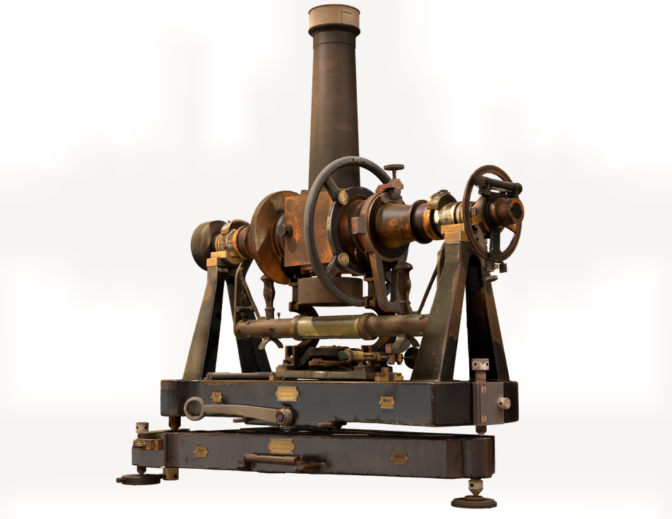
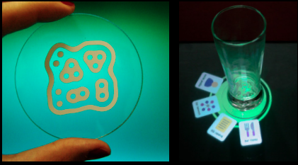

A reservoir engineer’s job is to understand and predict what cannot be seen or touched. To this end, a number of indirect tools and measurements are required, involving considerable uncertainty. Gathering information about the reservoir is a costly and time-consuming task. A reservoir model is built to converge all available data and extrapolate over a 3D geological model, in order to characterize the subsurface environment to be used in numerical simulators. It guides planning and production of the field over its lifetime. In the Oil and Gas industry, processing and visualizing 3D models is of paramount importance for making exploration and production decisions. To overcome this challenge, I implemented an interactive Cutaway method strongly relying on screen-space GPU techniques, specially designed for inspecting 3D reservoir models represented as corner-point grids, the industry’s standard.

The Digital Bamberg project was a joint collaboration between the Computer Graphics Lab at PESC/UFRJ and the Museum of Astronomy and Related Sciences (MAST). It combined the challenges of creating a digital replica of a scientific instrument that is part of the museum collection and treated as a historical artifact. In this project, I assisted development and design of software and algorithms for the 3D digitization process, which included acquiring the 3D geometry with a laser scanner and registering high-quality images from a professional DSLR camera. The process of fusing all high-quality images onto the final scanner model generated the primary research output of the project, involving image processing and texture registration.

In this project, I implemented the software prototype ReactBar in collaboration with designers as part of the Interactive Media and Natural Interfaces workshop promoted by Visgraf at IMPA. The workshop focused on recent advances in tangible user interfaces (TUI), multitouch interaction, computer graphics, image processing, sound synthesis, and new authoring environments. ReactBar uses multitouch interaction and tangible interfaces for entertainment in public spaces, exploring concepts of social networking with an intuitive interface and fun user experience.